How to get to World teleports
In depot is 2 teleporters to the South. Go the right side.
Ghost island: Platinum coin quest
In world teleports, go upstairs and go the very first teleport from West. After that go downstairs and head North, there’s a chest with easy monsters.
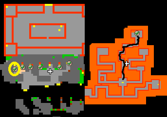
The desert: Dragon lance & Crown legs and Dragon scale mail & Hammer of wrath quests
You can go from either World teleports or South from depot to enter the Desert area. Head South-east and find the stairs down. There’s experience door with a teleport. All 4 chests are there with easy monsters.
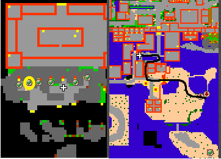
The desert: The horned helmet & Winged helmet quest
From Desert teleporter again head South-east to the next stairs heading down. Hardest monsters there are Orshabaals, but there’s some easier monsters aswell such as beholders, many pharaohs and dragons. The chests are in different places.
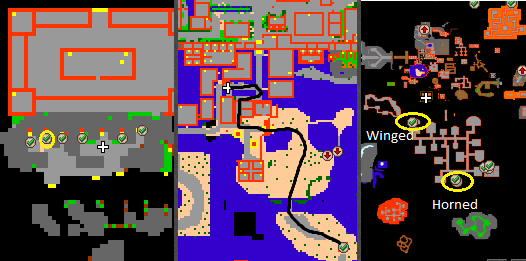
The desert: Tempest shield quest
Last quest in the Desert is at the very South with a tower like place. Follow the path from there from teleport to another as you reach the top with xarptor.
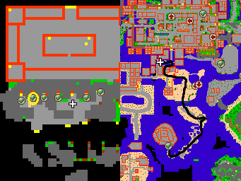
The Elven city: Combat knife quest
From world teleports, go upstairs teleports with a sign The Elven city. Head East small tower with different elves in there.
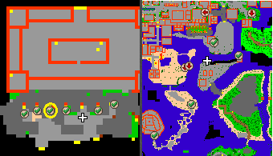
Ezolands: Warlord sword quest
From world teleport area go upstairs and head to the Ezolands teleport. You’ll be teleported near ladders up where’s a teleport. Head there and follow the path to your reward. The place is filled with different kinds of mobs, from slimes to Orshabaals.
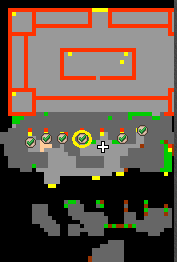
Ezolands: Golden armor quest
From world teleport area go upstairs and go to the Ezolands teleport. Head South stairs and go under the mountain. Follow the path first to South as cyclops tries to snap you in half, then North-west with experience doors. There’s a chest guarded by behemoths.
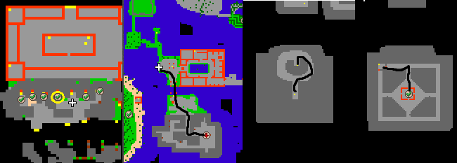
The Jungle: Steel spear quest
From world teleports, go upstairs and head to The Jungle. Follow the path to the South mountain area, the place is filled with hydras. Get past the mountain and head to the West with the chest.
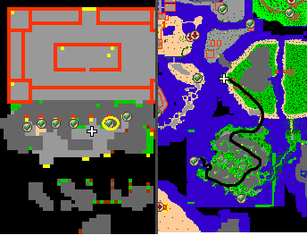
The Monkey Island: Noble armor quest
Head to the world teleport area and go upstairs, last teleport to the right named The monkey island. Go south-west tower like place with merklins and sibangs. The chest is at the top.
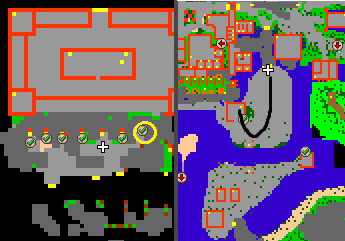
The forgotten island: Amazon shield & Spider chain mail quest
At the world teleport area, go first teleport from right and head South-east within the city walls. Head down to the hole and follow the path to as down as you can. You’ll face heroes, vampires, some pharaohs and couple morgaroths. 2 chests at the bottom of the area North-west corner.
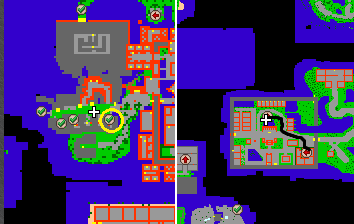
Spider island: Skull staff, Fire axe + Phoenix shield quests
At the world teleport area, head to Spider island and go North and stairs down. Giant spider is guarding the Skull staff chest. Come back up and head to the Western area, go downstairs couple of times, there are giant spiders, banshees and warlocks giving their life for protecting those fire axe and phoenix shield chests.
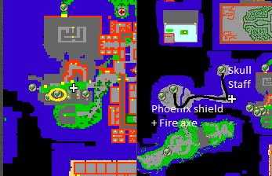
Dragon lands: Crown armor quest
From world teleports head to the second last teleport with a sign Dragon lands. Head East side stairs and follow the path to the end. This area is filled with kinds of dragons. The chest is at the end.
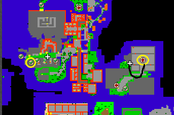